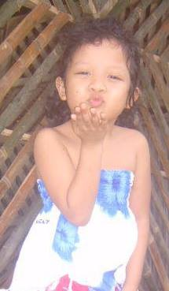
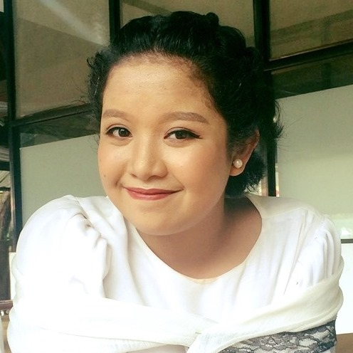
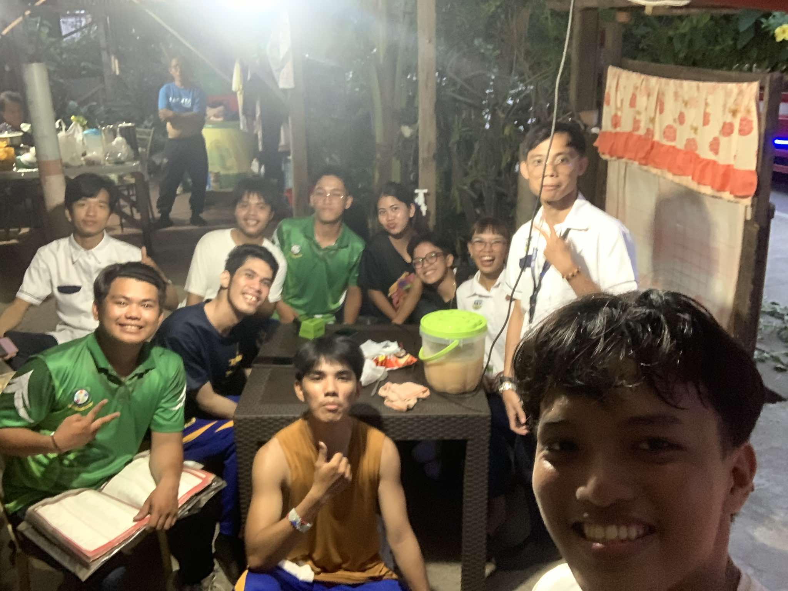

Home
Welcome to my personal website! Here you can learn more about me.
About Me

Biography
I was born in Butuan City and have lived in Nasipit for most of my life. I enjoy learning new things and meeting new people.
My Life Story
Childhood
Teenage
Adulthood
My life has been a journey filled with ups and downs. From [a significant event] to [another significant event], each experience has shaped who I am today.
Hobbies
In my free time, I enjoy [hobby 1], [hobby 2], and [hobby 3]. These activities help me relax and express my creativity.
Favorites
Some of my favorite things include [favorite book], [favorite movie], and [favorite food]. They bring joy to my life!
Friends
I am grateful for my friends who support me through thick and thin. Each one of them has a special place in my heart.